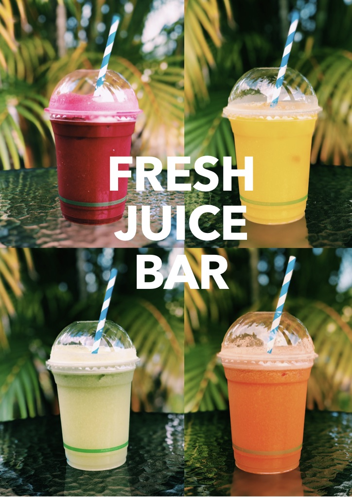

Because we care about you, your family and our planet, we only use the very best coffee that is ethically sourced and locally roasted by the White Whale Coffee Roasters. We only use Mungalli milk, from locally farmed cows on the Tablelands, our Syrups for coffee and frappes are from a family owned Australian company and contain no artificial colours and flavours. Our cups and lids are biodegradable and compostable with lids and lining made from plant materials not plastic and we use only paper straws. We are passionate about coffee, supporting other local businesses and great customer service.
.......................
We are Open 7 days a week
Monday - Thursday 6:30am–1:30pm, 2:45–4pm
Friday 6:30am–1:30pm, 2:45–8pm
Saturday & Sunday 7am–1pm